Para criar uma tarefa, o usuário deverá clicar no menu Tarefas e depois no botão
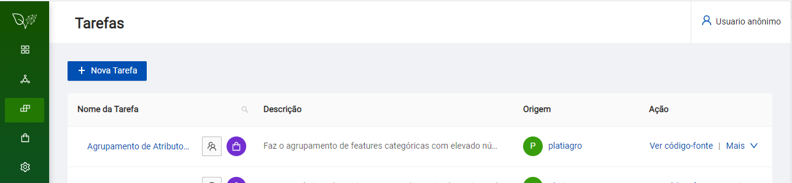
Descrição: Na página "Tarefas", será apresentada uma lista com todas as tarefas existentes. As informações das tarefas estarão divididas em três colunas: Nome da Tarefa, Descrição e Ação.
Nesta tela serão apresentadas as tarefas da plataforma e dos usuários.
A plataforma oferece uma série de exemplos para iniciar nova tarefa. Ela também oferece uma opção em branco.

Descrição: A janela "Nova Tarefa", possui dois campos obrigatórios (assinalados com asterisco) e um opcional.
O primeiro campo obrigatório é o tipo do exemplo ou "template" inicial. A plataforma oferece grande quantidade de exemplos envolvendo classificação, regressão, seleção de "features" e muitos outros.
O segundo campo obrigatório é o nome da tarefa. O nome da tarefa será mostrado junto com os outros nomes então escolha um nome que facilite encontrar sua tarefa no futuro.
O campo opcional é uma descrição de sua tarefa. Se não precisar descrever ou registrar algum detalhe importante pode ficar em branco.
O botão "Cancelar" fecha esta janela e volta para a anterior sem gravar nada.
O botão "Criar Notebooks" abre nova aba no seu navegador com três divisões que serão comentadas na próxima seção deste tutorial.
Após selecionar e preencher os campos necessários a plataforma abre nova aba com as divisões Experiment.jpynb e Deployment.jpynb.

Descrição: A aba "Nova Tarefa", possui algumas divisões criadas para orientar a elaboração da tarefa que serão comentados em outra seção.
Esta aba é criada com as divisões Experiment.jpynb e Deployment.jpynb. Também pode ser criada outra seção para Terminal onde podem ser executados comandos do Unix/Linux.
Nesta aba também podem ser visualizados os artefatos da tarefa e a localização destes artefatos no servidor.
Obs.1: o sinal de adição no menu superior cria mais uma célula para seus códigos
Obs.2: o ícone com a tesoura remove a célula selecionada
Obs.3: use CONTRL-ENTER para executar a célula selecionada porque o triângulo no alto da tela (Run...) não faz nada
Obs.4: o ícone 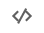 serve para inserir novo parâmetro ("input")
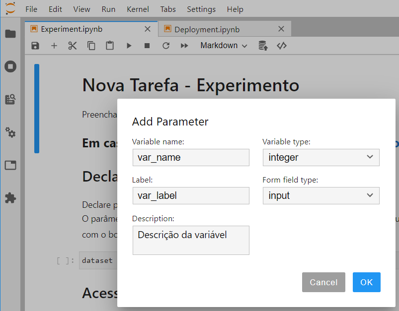
Descrição: A janela "Add Parameter", possui alguns campos sobre o novo parâmetro.
O campo "Variable name" deve ser preenchido levando em consideração as regras para nomes de variáveis em Python.
O campo "Label" deve ser preenchido com o nome que vai aparecer na área de parâmetros da plataforma que abre em uma aba lateral.

Na seção Declaração de parâmetros e hiperparâmetros é importante ressaltar que um dataset deve ter o método read(), como um dataframe Pandas.

Neste exemplo foi criado um parâmetro (input) que aparece no Experiment.jpynb como "var_name" e aparece na aba lateral com a identificação "var_label".
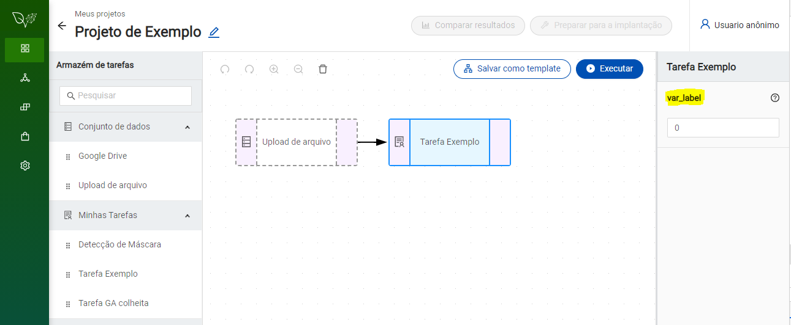
O ícone na parte de baixo da lateral esquerda da tela serve para exibir os principais artefatos da tarefa: Experiment.jpynb e Deployment.jpynb

O ícone na parte de cima da lateral esquerda serve para exibir um navegador de arquivos que mostra todos os artefatos da tarefa e sua localização no servidor

O ícone com sinal de adição no menu superior perto da pasta preta serve para abrir o ícone para o "Terminal de comandos" e outras funcionalidades

Neste exemplo foram usados alguns comandos para verificar em que local do servidor estão localizados os arquivos desta tarefa.

O ícone serve para criar novas pastas na pasta atual.
O ícone serve para fazer upload de arquivos da máquina do usuário para a pasta do projeto. É importante ressaltar que esta pasta é temporária e os arquivos carregados nesta pasta deverão ser carregados novamente para futuras pastas deta tarefa.
A maneira de fazer com que os arquivos necessários sejam copiados automaticamente para esta pasta é via o comando wget.
Exemplo "wget https://raw.githubusercontent.com/platiagro/.../nome_arquivo.csv"
Se o código for grande é melhor criar classes e importar no componente com "from file import classes, métodos"
Para importar classes e métodos no componente primeiro precisa carregar o arquivo .py para a pasta do componente
Passos para levar arquivos até a pasta do componente:
a) encontrar a URL do arquivo de origem no github ou equivalente
b) executar wget em uma céula do Experiment. Exemplo:
!wget https://github.com/platiagro/.../nome_arquivo.py
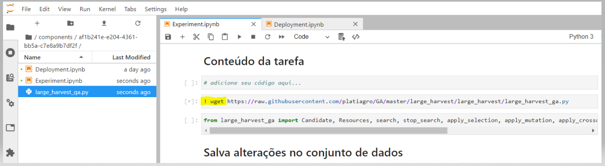
A tabela será redimensionada em função do tamanho do dataframe (df)
Mostrar resultados em forma de gráfico e tabela usando dataframe Pandas e Matplotlib.
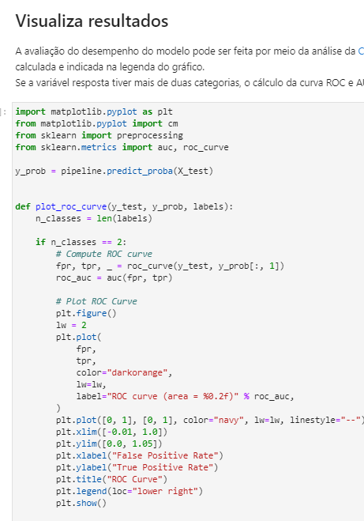
Após clicar no ícone 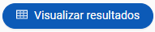 será aberta nova janela com a tabela de resultados.
A figura a seguir mostra um exemplo de uma tabela com apenas 5 colunas.
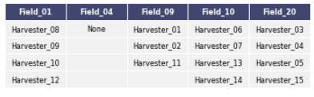
A figura a seguir mostra outra tabela com 17 colunas redimensionada para caber na tela.
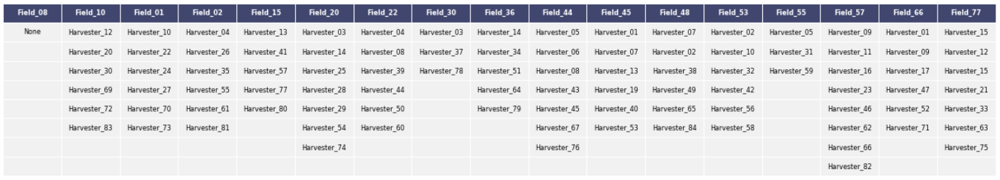
A aba Deployment armazena o código necessário para a plataforma executar no servidor o modelo que foi criado na aba Experiment.
O modelo deve ser importado e encapsulado na classe Model então esta classe precisa implementar o método "predict()".
A primeira seção desta aba serve para identificação da atividade, do autor e de seus principais objetivos.
Recomenda-se que sejam registrados o nome do autor e a data de criação.
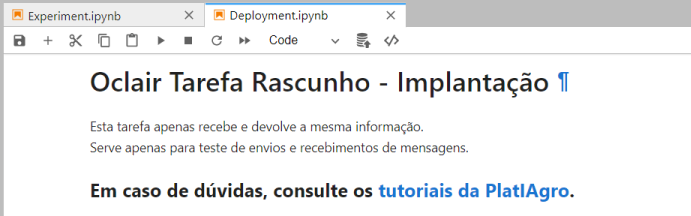
A segunda seção define a classe Model que precisa implementar o método "predict()" para ser executado pelo servidor.
Neste exemplo o método "predict()" apenas mostra o parâmetro recebido e retorna este parâmetro para a interface gráfica.
As capturas de tela da interface gráfica serão mostradas no final deste tutorial porém a aba Deploymente também pode ser usada para conferir o resultado.
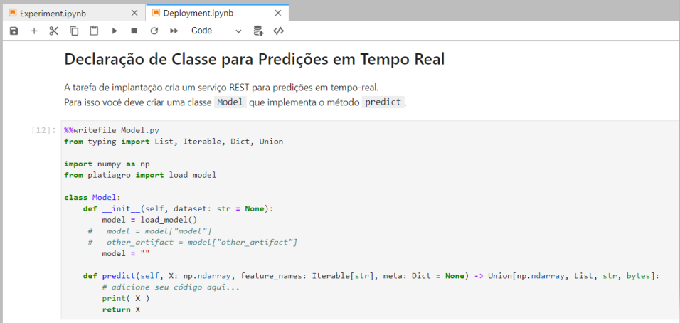
Note que a classe modelo deve retornar uma lista então talvez seja necessário acrescentar o método class_names().
Outro ajuste importante para modelos regressores é o retorno convertido para um array numpy.
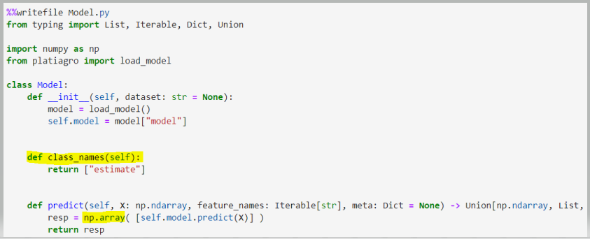
A seção Teste do serviço REST orienta como o pesquisador pode testar o resultado da execução de seu modelo.
Ela ajuda a criar um arquivo com um objeto json (JavaScipt Object Notation) para ser enviado ao seu modelo via protocolo REST.
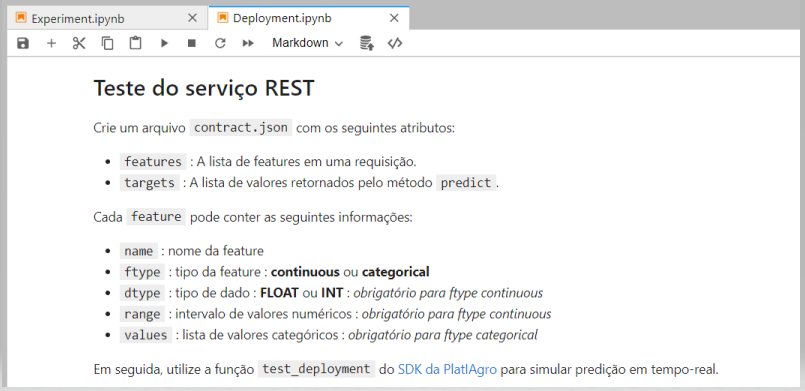
É importante ressaltar que o valor enviado ao modelo será sorteado de um intervalo que deve ser especificado na área "range" do objeto json.
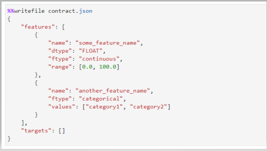
Se o modelo for do tipo Regressor então o arquivo json precisa ser ajustado.
Neste exemplo o modelo espera um arquio com duas colunas contendo valores numéricos.
Por isto a coluna "p0" tem o range [5.0, 5.0] e a coluna "p1" tem o range [6.0, 6.0], assim a plataforma vai sortear um valor entre 5 e 5 para a primeira coluna e um valor entre 6 e 6 para a segunda coluna.
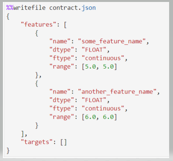
test_deployment("contact.json")
A última parte desta aba se encarrega de enviar o objeto json que foi gravado no arquivo contact.json usando o método test_deployment("contact.json")
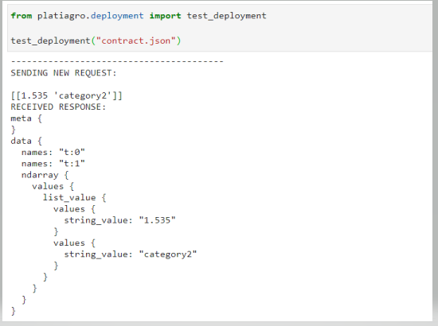
Resultado do teste na aba Deployment
O objeto json é exibido para o pesquisador conferir se os resultados estão de acordo com o esperado.
Cada projeto pode ter vários experimentos, porém apenas um deles será implantado.
Espera-se que os experimentos sejam criados e explorados até que o pesquisador se decida pela implantação de um deles para execução em tempo real no servidor.
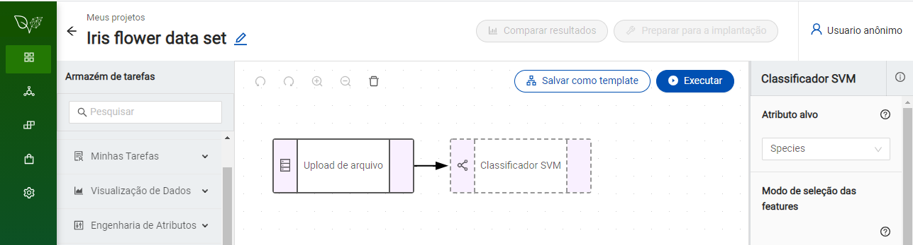
Depois de criada a atividade desejada, ela deve ser executada para permitir sua implantação.
Se ocorrer algum erro durante sua execução o botão de implantação fica bloqueado.
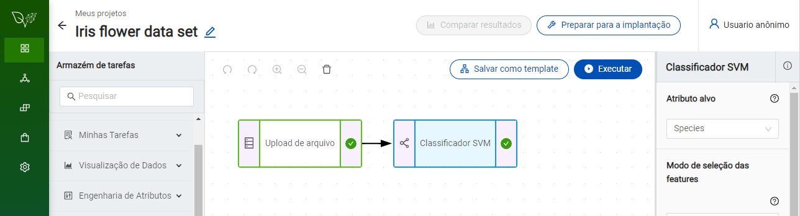
O botão Implantação somente será liberado após uma execução completa da atividade sem nenhum erro.
É importante lembrar que este botão será liberado somente uma vez para cada projeto.
Caso dois ou mais experimentos apresentem bons resultados então o pesquisador deve considerar a possibilidade de criar novos projetos para eles.
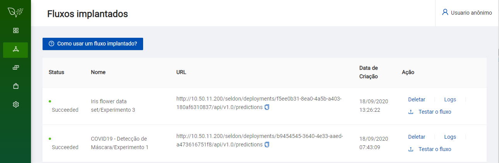
A janela de Fluxos Implantados mostra os fluxos implantados pelo pesquisador.
A coluna "Status" apresenta a situação atual do experimento. O experimento deve ter o status "Succeeded" para poder ser executado.
A coluna "Nome" apresenta o nome do experimento implantado.
É importante ressaltar que este nome é composto pelo nome do projeto seguido pelo nome do experimento selecionado.
A coluna "URL" contém a url do experimento implantado. Ela pode ser usada em um terminal de comandos Unix/Linux.
A coluna "Data de Criação" contém a data e a hora da implantação do experimento.
A coluna "Ação" contém três opções:
"Deletar" (apagar) o experimento
"Testar Inferência" para executar o experimento enviando um arquivo CSV para o modelo.
"Logs" para visualizar a mensagens do modelo em execução.
A ação Testar Inferência apresenta em uma janela o resultado recebido da execução do modelo no servidor.
O título desta janela é Visualizar resultados
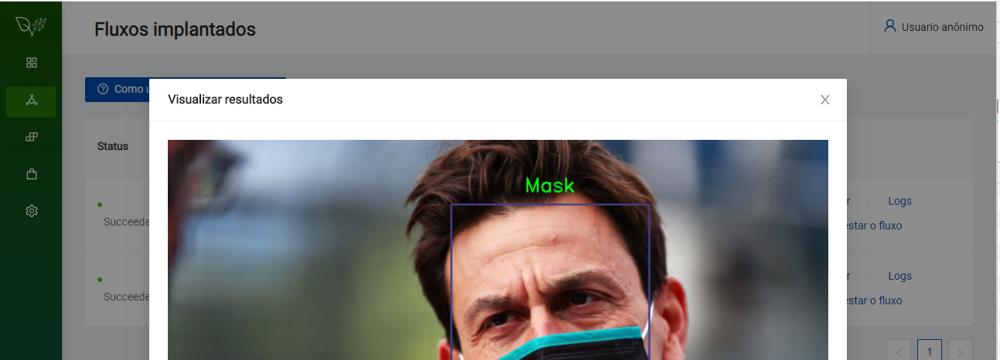
A ação Logs exibe uma janela para logs.
Como a quantidade de mensagens de log costuma ser grande esta janela possui paginação.
Note que as mensagens mais recentes ficam no fim da lista.
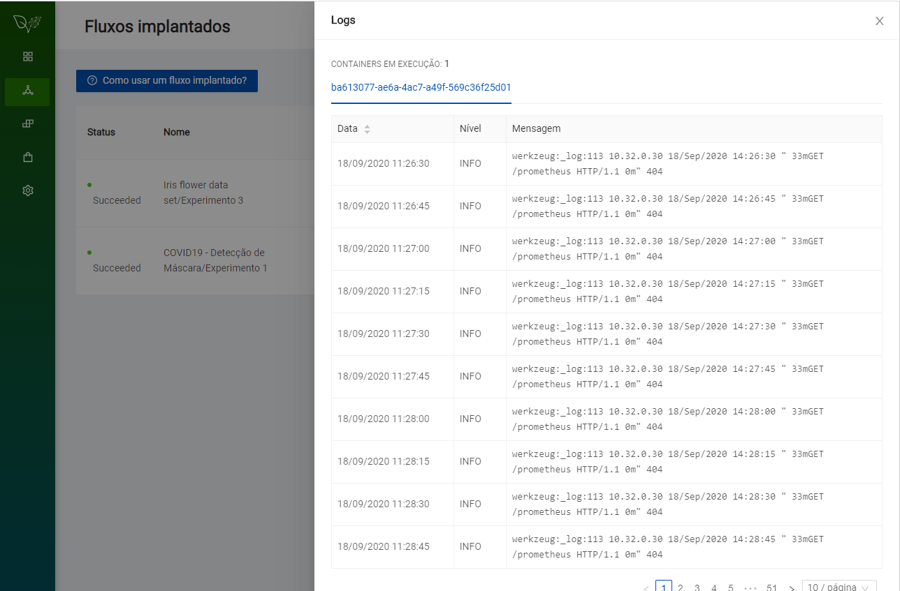